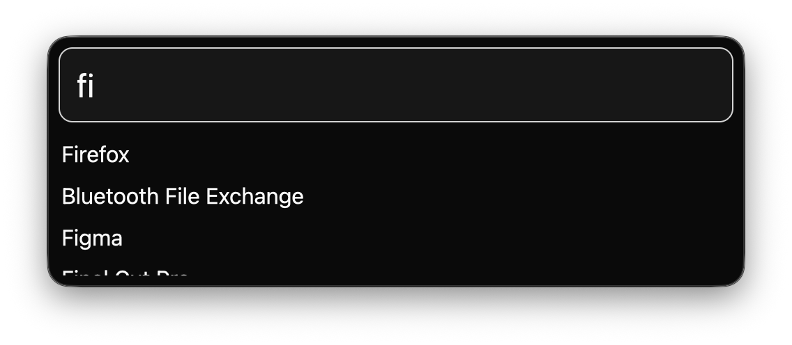

Fetch is an app launcher for macOS where everything works instantly.
Stop wasting your time (literally) with Spotlight, Alfred, Raycast, etc. This does one job and one job only: launch apps. We are working to make this job as smooth and fast as possible. Here's how to use it:
- Start the app. Nothing will happen yet, but the app will automatically register to launch on boot.
- Use the hotkey ⌥+Space to instantly activate the search bar.
- Search the app you want.
- Press Enter to load the first app in the search results, or click on one of the results.
There's a lot to do still. It is not ready yet for general release but you can build it yourself if you're brave. We're actively working on it, and our work and roadmap is public. Come give your feedback on the GitHub page!